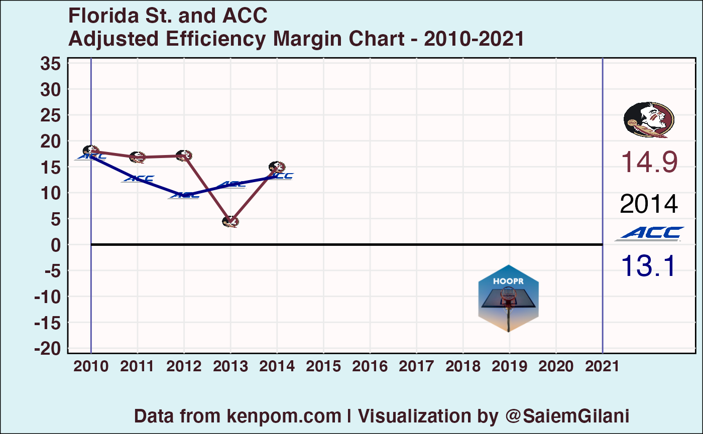

We will be acquiring data from kenpom.com, using the hoopR package, created by Saiem Gilani. An active subscription to the website will be required for most of this tutorial.
R & RStudio
This tutorial will require the use of R and RStudio. You can follow the instructions at R Studio on how to get started.
Using Your KenPom Subscription
You can save your user email and password for consistent usage by adding KP_USER = XX-YOUR-EMAIL-XX@YOUR-DOMAIN.COM and KP_PW = XX-YOUR-PASSWORD-XX to your .Renviron file (easily accessed via usethis::edit_r_environ()). Run usethis::edit_r_environ(), a new script will pop open named .Renviron, THEN paste the following in the new script that pops up (without quotations)
KP_USER = XX-YOUR-EMAIL-XX@YOUR-DOMAIN.COM
KP_PW = XX-YOUR-PASSWORD-XXSave the script and restart your RStudio session, by clicking Session (in between Plots and Build) and click Restart R (n.b. there also exists the shortcut Ctrl + Shift + F10 to restart your session). If set correctly, from then on you should be able to use any of the kp_ functions without any other changes.
For less consistent usage, save your user email and password as the environment variables KP_USER and KP_PW (with quotations) at the beginning of every session, using a command like the following.
Sys.setenv(KP_USER = "XX-YOUR-EMAIL-XX@YOUR-DOMAIN.COM")
Sys.setenv(KP_PW = "XX-YOUR-PASSWORD-XX")How the browser login is set
This is the function that is evaluated to log you in to kenpom.com to use the functions. In prior versions, this function needed to be set and passed as a parameter to the functions for usage, but is now applied under the hood within each KenPom (kp_) function.
browser <- login(Sys.getenv("KP_USER"), Sys.getenv("KP_PW"))Import libraries
# You can install using the pacman package using the following code:
if (!requireNamespace('pacman', quietly = TRUE)){
install.packages('pacman')
}
#pacman::p_load_current_gh("saiemgilani/hoopR")
pacman::p_load(dplyr, ggplot2,animation,ggimage,png, glue)Let’s first just try to get our hands on the Pomeroy ratings for the last 10 years by using the hoopR::kp_pomeroy_ratings() function, which takes the following arguments:
-
min_year- First year of data to pull -
max_year- Last year of data to pull
rtgs <- hoopR::kp_pomeroy_ratings(min_year = 2010, max_year = 2021)
glimpse(rtgs)## Rows: 4,202
## Columns: 23
## $ year <int> 2021, 2021, 2021, 2021, 2021, 2021, 2021, 2021, 2021, …
## $ rk <dbl> 1, 2, 3, 4, 5, 6, 7, 8, 9, 10, 11, 12, 13, 14, 15, 16,…
## $ team <chr> "Gonzaga", "Baylor", "Michigan", "Illinois", "Houston"…
## $ conf <chr> "WCC", "B12", "B10", "B10", "Amer", "P12", "B10", "P12…
## $ w_l <chr> "31-1", "28-2", "23-5", "24-7", "28-4", "25-8", "22-9"…
## $ adj_em <dbl> 36.48, 33.87, 29.67, 29.06, 28.75, 27.58, 26.87, 25.10…
## $ adj_o <dbl> 126.4, 125.0, 117.6, 118.0, 118.3, 115.7, 123.5, 116.3…
## $ adj_o_rk <dbl> 1, 2, 9, 8, 7, 14, 3, 13, 30, 41, 4, 6, 11, 29, 16, 10…
## $ adj_d <dbl> 89.9, 91.1, 87.9, 88.9, 89.6, 88.1, 96.7, 91.2, 87.8, …
## $ adj_d_rk <dbl> 11, 22, 4, 7, 9, 6, 75, 23, 3, 2, 82, 66, 46, 15, 33, …
## $ adj_t <dbl> 73.8, 67.4, 66.6, 70.5, 64.4, 67.0, 69.9, 66.1, 73.3, …
## $ adj_t_rk <dbl> 7, 213, 256, 79, 332, 235, 93, 276, 11, 342, 251, 336,…
## $ luck <dbl> 0.022, 0.046, 0.007, 0.022, 0.018, 0.001, -0.027, -0.0…
## $ luck_rk <dbl> 127, 80, 156, 128, 133, 171, 244, 237, 131, 233, 212, …
## $ sos_adj_em <dbl> 11.35, 13.25, 16.44, 18.17, 9.21, 16.27, 16.41, 15.43,…
## $ sos_adj_em_rk <dbl> 72, 54, 19, 5, 90, 21, 20, 28, 33, 112, 9, 47, 11, 6, …
## $ sos_opp_o <dbl> 108.1, 108.7, 111.7, 112.3, 105.7, 111.1, 110.4, 110.3…
## $ sos_opp_o_rk <dbl> 70, 64, 9, 5, 105, 19, 31, 32, 35, 110, 10, 51, 14, 7,…
## $ sos_opp_d <dbl> 96.8, 95.5, 95.3, 94.1, 96.5, 94.8, 94.0, 94.9, 95.3, …
## $ sos_opp_d_rk <dbl> 74, 44, 39, 13, 67, 28, 9, 31, 41, 123, 5, 50, 6, 8, 6…
## $ ncsos_adj_em <dbl> 6.21, -2.83, 2.51, 10.44, 2.11, 6.28, -4.90, 3.82, 9.4…
## $ ncsos_adj_em_rk <dbl> 112, 258, 178, 59, 187, 111, 285, 157, 71, 139, 164, 8…
## $ ncaa_seed <dbl> 1, 1, 1, 1, 2, 6, 2, 5, 2, 8, 2, 5, 11, 9, 4, 7, 6, 3,…So in this vignette, we’re going to plot something simple first to get a sense of how we would compare different metrics and groups. In this example, we are going to compare Florida State’s adjusted efficiency margin (AdjEM) over the past ten years and the ACC conference average.
Pre-processing
First, to keep things a bit simpler, we will first create a second and third rtgs dataset, one for the the filtered ACC data, and the other for Florida State. We will then combine these two to plot our data with. - ACC: filter by conference = ‘ACC’, group by the year and conference, then use dplyr’s dplyr::summarize() function, which we use to compute the `mean() of each of the Year-Conf combinations. However, in this case, since there is only one conference, it is essentially just a Year grouping for the ACC.
team1 = "Florida St."
team2 = "ACC"
metric <- "adj_em"
full_metric <- "Adjusted Efficiency Margin"
Color1 = '#782F40'
Color2 = 'navyblue'
rtgs$metric = rtgs[, metric]
rtgs_acc <- rtgs %>%
dplyr::filter(.data$conf == team2) %>%
dplyr::group_by(.data$year,.data$conf) %>%
dplyr::summarize(metric = mean(metric)) %>%
dplyr::ungroup() %>%
dplyr::rename(team = .data$conf)## `summarise()` has grouped output by 'year'. You can override using the
## `.groups` argument.
rtgs_fsu <- rtgs %>%
filter(team == team1) %>%
arrange(-.data$year, .data$rk) %>%
select(year, team, metric)
# combine the two datasets using rbind
plot_data <- rbind(rtgs_fsu, rtgs_acc)
plot_data <- rtgs_fsu %>%
mutate(metric_1 = metric) %>%
left_join(rtgs_acc %>%
select(.data$year, .data$metric),
by=c("year"),suffix=c("","_2"))
plot_data <- plot_data %>%
mutate(
metric = round(metric,1),
metric_1 = round(metric_1,1),
metric_2 = round(metric_2,1)
) %>%
arrange(.data$year)
plot_data$Color_1 = Color1
plot_data$Color_2 = Color2
logo_url <- "https://raw.githubusercontent.com/saiemgilani/hoopR/master/man/figures/logo.png"
z <- tempfile()
download.file(logo_url,z,mode="wb")
m <- png::readPNG(z)
img <- matrix(rgb(m[,,1],m[,,2],m[,,3], m[,,4] ), nrow=dim(m)[1]) #0.2 is alpha
rast <- grid::rasterGrob(img, interpolate = T)
plot_data <- plot_data %>%
mutate(logo_1 = "https://a.espncdn.com/i/teamlogos/ncaa/500/52.png?transparent=true&w=35&h=35",
logo_2 = "https://a.espncdn.com/i/teamlogos/ncaa_conf/500/1.png?transparent=true&w=35&h=35") %>% arrange(year)
# points for plotting
x_max <- 2021
x_lab_min <- 2010 - 3
x_lab_max <- x_max + 2
x_score <- 2 + x_maxPlotting a simple animation
draw_frame <- function(year)
{
yr <- year
# frame data
frm_data <- plot_data %>%
filter(.data$year <= yr)
# output quarter changes
if (nrow(frm_data %>% filter(year == max(.data$year))) == 1)
{
print(glue::glue("Plotting AdjEM in Year: {max(frm_data$year)}"))
}
# plot
frm_plot <- frm_data %>%
ggplot(aes(x = year, y = metric, group=team))+
theme_minimal()+
geom_vline(xintercept = c(2010, x_max), color = "#5555AA")+
geom_segment(x = 2010, xend = 2021, y = 0, yend = 0, size = 0.75)+
geom_image(x = x_score-1, y = 24, image = frm_data$logo_1, size = 0.09, asp = 1.5)+
geom_image(x = x_score-1, y = 2, image = frm_data$logo_2, size = 0.12, asp = 1.5)+
geom_image(aes(x = year, y = metric_1, image = logo_1), size = .03, asp = 1.5)+
geom_image(aes(x = year, y = metric_2, image = logo_2), size = .06, asp = 1.5)+
annotation_custom(grob = rast, xmin=2017, xmax=2021, ymin=-2, ymax=-20)+
geom_line(aes(x = year, y = metric_1, color = Color1), size = 1)+
geom_line(aes(x = year, y = metric_2, color = Color2), size = 1)+
scale_color_manual(values = c(Color1, Color2))+
scale_x_continuous(breaks = seq(2010, 2021, 1),
minor_breaks = NULL,
limits = c(2009.5, x_max + 2)) +
scale_y_continuous(breaks = seq(-20, 35, 5),
minor_breaks = NULL,
limits = c(-21, 36)) +
coord_cartesian(clip = "off",expand = FALSE) +
xlab("") +
ylab("") +
labs(title = glue::glue("{team1} and {team2} \n{full_metric} Chart - {min(plot_data$year)}-{max(plot_data$year)}"),
caption = "Data from kenpom.com | Visualization by @SaiemGilani") +
theme(legend.position = "none",
axis.title.x = element_text(size = 18, family = "sans", face = 'bold', color = "#3D1A22"),
axis.text.x = element_text(size = 12, family = "sans", face = 'bold', color = "#3D1A22"),
axis.title.y = element_text(size = 18, family = "sans", face = 'bold', color = "#3D1A22"),
axis.text.y = element_text(size = 14, family = "sans", face = 'bold', color = "#3D1A22"),
plot.title = element_text(size = 16, family = "sans", face = 'bold', color = "#3D1A22"),
plot.subtitle = element_text(size = 14, family = "sans", face = 'bold', color = "#3D1A22"),
plot.caption = element_text(size = 14, family = "sans", face = 'bold', color = "#3D1A22",hjust=0.5),
panel.background = element_rect(fill = "snow"),
plot.background = element_rect(fill = "#DCF2F5"))
# score display
metric1 <- tail(frm_data$metric_1, n=1)
metric2 <- tail(frm_data$metric_2, n=1)
# clock display
Year <- case_when(
max(frm_data$year) == 2010 ~ "2010" ,
max(frm_data$year) == 2011 ~ "2011" ,
max(frm_data$year) == 2012 ~ "2012" ,
max(frm_data$year) == 2013 ~ "2013" ,
max(frm_data$year) == 2014 ~ "2014" ,
max(frm_data$year) == 2015 ~ "2015" ,
max(frm_data$year) == 2016 ~ "2016" ,
max(frm_data$year) == 2017 ~ "2017" ,
max(frm_data$year) == 2018 ~ "2018" ,
max(frm_data$year) == 2019 ~ "2019" ,
max(frm_data$year) == 2021 ~ "2020" ,
max(frm_data$year) == 2020 ~ "2021" ,
TRUE ~ as.character(max(frm_data$year))
)
# add score and clock to plot
frm_plot <- frm_plot +
annotate("text", x = x_score-1, y = 16, label = metric1, color = Color1, size = 8) +
annotate("text", x = x_score-1, y = -4, label = metric2, color = Color2, size = 8) +
annotate("text", x = x_score-1, y = 8, label = Year, color = "#000000", size = 7)
# label key moments
# frm_labels <- frm_data %>%
# filter(text != "")
# frm_plot <- frm_plot +
# geom_point(frm_labels, mapping = aes(x = Year, y = AdjEM),
# color = "#000000", size = 2, show.legend = FALSE) +
# geom_segment(frm_labels, mapping = aes(x = x_text, xend = s, y = y_text, yend = wp),
# linetype = "dashed", color = "#000000", na.rm=TRUE) +
# geom_label(frm_labels, mapping = aes(x = x_text, y = y_text, label = text),
# size = 3, color = "#000000", na.rm = TRUE, alpha = 0.8)
# plot the frame
plot(frm_plot, width = 12.5, height = 6.47, dpi = 500)
}
draw_frame(2014)## Plotting AdjEM in Year: 2014
draw_gif <- function()
{
lapply(plot_data$year, function(year)
{
draw_frame(year)
})
print("Plotting frames for pause")
replicate(3, draw_frame(max(plot_data$year)))
print("Assembling plots into a GIF")
}
saveGIF(draw_gif(), interval = 1, movie.name = glue::glue("animated_{metric}.gif"),
ani.width = 960, ani.height = 540, ani.res = 110)
Result

site_navigation
effs <- hoopR::kp_efficiency(min_year = 2021, max_year = 2021)
glimpse(effs)## Rows: 357
## Columns: 20
## $ team <chr> "Coppin St.", "Eastern Kentucky", "South Caroli…
## $ conf <chr> "MEAC", "OVC", "SEC", "SC", "MAAC", "NEC", "WCC…
## $ adj_t <dbl> 76.8, 74.8, 74.6, 74.2, 74.2, 74.0, 73.8, 73.7,…
## $ adj_t_rk <dbl> 1, 2, 3, 4, 5, 6, 7, 8, 9, 10, 11, 12, 13, 14, …
## $ raw_t <dbl> 79.4, 75.6, 75.3, 74.5, 74.4, 76.1, 74.3, 74.3,…
## $ raw_t_rk <dbl> 1, 5, 7, 11, 12, 3, 14, 15, 9, 19, 10, 2, 6, 46…
## $ avg_poss_length_off <dbl> 14.0, 15.4, 15.2, 15.5, 14.6, 15.5, 14.4, 15.3,…
## $ avg_poss_length_off_rk <dbl> 1, 16, 12, 18, 4, 17, 3, 14, 8, 9, 2, 15, 21, 1…
## $ avg_poss_length_def <dbl> 16.1, 16.1, 16.7, 16.7, 17.8, 16.0, 18.0, 17.1,…
## $ avg_poss_length_def_rk <dbl> 13, 17, 64, 62, 271, 10, 299, 137, 207, 166, 27…
## $ adj_o <dbl> 91.0, 101.0, 103.9, 104.0, 99.0, 103.2, 126.4, …
## $ adj_o_rk <dbl> 334, 197, 139, 136, 237, 160, 1, 256, 310, 42, …
## $ raw_o <dbl> 91.6, 104.5, 96.3, 104.0, 100.4, 107.0, 121.9, …
## $ raw_o_rk <dbl> 324, 100, 272, 110, 187, 58, 1, 260, 215, 89, 6…
## $ adj_d <dbl> 102.6, 101.5, 98.9, 109.1, 105.1, 104.7, 89.9, …
## $ adj_d_rk <dbl> 183, 160, 113, 305, 229, 223, 11, 224, 205, 112…
## $ raw_d <dbl> 100.2, 97.3, 105.1, 110.5, 98.3, 98.4, 93.4, 10…
## $ raw_d_rk <dbl> 135, 67, 260, 328, 85, 89, 17, 245, 78, 196, 20…
## $ ncaa_seed <dbl> NA, NA, NA, NA, NA, NA, 1, NA, NA, NA, 2, NA, N…
## $ year <dbl> 2021, 2021, 2021, 2021, 2021, 2021, 2021, 2021,…
ff <- hoopR::kp_fourfactors(min_year = 2021, max_year = 2021)
glimpse(ff)## Rows: 357
## Columns: 26
## $ team <chr> "Gonzaga", "Baylor", "Iowa", "Ohio St.", "LSU", "Villa…
## $ conf <chr> "WCC", "B12", "B10", "B10", "SEC", "BE", "Amer", "B10"…
## $ adj_t <dbl> 73.8, 67.4, 69.9, 66.7, 70.6, 64.2, 64.4, 70.5, 66.6, …
## $ adj_t_rk <dbl> 7, 213, 93, 251, 70, 336, 332, 79, 256, 226, 341, 122,…
## $ adj_o <dbl> 126.4, 125.0, 123.5, 120.7, 120.1, 119.0, 118.3, 118.0…
## $ adj_o_rk <dbl> 1, 2, 3, 4, 5, 6, 7, 8, 9, 10, 11, 12, 13, 14, 15, 16,…
## $ off_e_fg_pct <dbl> 61.0, 56.5, 54.7, 52.9, 52.3, 53.2, 50.4, 55.6, 54.7, …
## $ off_e_fg_pct_rk <dbl> 1, 7, 24, 58, 73, 49, 154, 12, 25, 32, 82, 217, 69, 60…
## $ off_to_pct <dbl> 16.1, 16.5, 13.3, 15.5, 15.6, 13.7, 16.2, 18.1, 16.6, …
## $ off_to_pct_rk <dbl> 40, 54, 1, 18, 19, 4, 43, 128, 58, 66, 25, 71, 82, 122…
## $ off_or_pct <dbl> 30.1, 37.3, 30.8, 29.3, 31.4, 27.8, 39.8, 32.2, 29.6, …
## $ off_or_pct_rk <dbl> 102, 5, 81, 119, 66, 174, 2, 49, 113, 130, 92, 8, 79, …
## $ off_ft_rate <dbl> 35.7, 26.5, 32.0, 37.2, 34.0, 30.0, 31.3, 37.9, 30.4, …
## $ off_ft_rate_rk <dbl> 66, 295, 158, 40, 106, 210, 177, 30, 201, 306, 167, 31…
## $ adj_d <dbl> 89.9, 91.1, 96.7, 97.1, 99.8, 96.0, 89.6, 88.9, 87.9, …
## $ adj_d_rk <dbl> 11, 22, 75, 82, 124, 66, 9, 7, 4, 55, 46, 70, 23, 6, 5…
## $ def_e_fg_pct <dbl> 47.7, 48.9, 48.8, 48.7, 48.5, 51.0, 43.9, 46.5, 44.4, …
## $ def_e_fg_pct_rk <dbl> 61, 121, 115, 108, 99, 216, 2, 29, 6, 200, 189, 217, 7…
## $ def_to_pct <dbl> 19.3, 24.4, 16.1, 14.7, 17.9, 18.4, 21.1, 16.0, 14.8, …
## $ def_to_pct_rk <dbl> 137, 4, 314, 337, 231, 198, 55, 316, 336, 86, 257, 58,…
## $ def_or_pct <dbl> 23.8, 30.6, 29.1, 27.0, 32.1, 25.7, 27.9, 22.1, 24.7, …
## $ def_or_pct_rk <dbl> 31, 274, 220, 141, 312, 84, 169, 11, 54, 158, 64, 283,…
## $ def_ft_rate <dbl> 25.7, 31.3, 22.2, 33.5, 29.8, 25.6, 41.2, 30.1, 24.3, …
## $ def_ft_rate_rk <dbl> 43, 167, 6, 219, 135, 40, 329, 142, 26, 55, 92, 87, 11…
## $ ncaa_seed <dbl> 1, 1, 2, 2, 8, 5, 2, 1, 1, 7, 11, 3, 5, 6, NA, 4, 4, N…
## $ year <dbl> 2021, 2021, 2021, 2021, 2021, 2021, 2021, 2021, 2021, …
hgts <- hoopR::kp_height(min_year = 2021, max_year = 2021)
glimpse(hgts)## Rows: 357
## Columns: 24
## $ team <chr> "Florida St.", "USC", "Seton Hall", "Santa Clara", "Kent…
## $ conf <chr> "ACC", "P12", "BE", "WCC", "SEC", "SEC", "ACC", "P12", "…
## $ avg_hgt <dbl> 79.6, 79.4, 79.2, 79.0, 79.0, 78.9, 78.8, 78.8, 78.8, 78…
## $ avg_hgt_rk <dbl> 1, 2, 3, 4, 5, 6, 7, 8, 9, 10, 11, 12, 13, 14, 15, 16, 1…
## $ eff_hgt <dbl> 2.2, 2.6, 3.3, 1.6, 2.1, 2.4, 2.6, 1.2, 1.6, 1.4, 2.5, 2…
## $ eff_hgt_rk <dbl> 11, 3, 1, 27, 14, 8, 4, 42, 25, 32, 5, 2, 24, 13, 28, 61…
## $ c_hgt <dbl> 2.6, 2.6, 3.6, 1.4, 2.2, 2.0, 2.1, 0.3, 1.6, 1.3, 2.8, 2…
## $ c_hgt_rk <dbl> 14, 11, 2, 50, 18, 23, 21, 129, 39, 51, 6, 8, 42, 12, 9,…
## $ pf_hgt <dbl> 1.9, 2.7, 3.0, 1.8, 1.9, 2.8, 3.1, 2.2, 1.7, 1.6, 2.2, 2…
## $ pf_hgt_rk <dbl> 18, 6, 2, 20, 14, 4, 1, 10, 28, 32, 9, 5, 23, 35, 94, 40…
## $ sf_hgt <dbl> 2.6, 3.4, 1.1, 2.0, 2.1, 1.9, 2.2, 2.8, 1.4, 1.2, 0.6, 2…
## $ sf_hgt_rk <dbl> 3, 1, 37, 12, 6, 14, 5, 2, 28, 34, 96, 10, 64, 121, 35, …
## $ sg_hgt <dbl> 2.6, 2.7, 2.4, 2.5, 1.6, 2.0, 1.1, 2.5, 1.9, 2.9, 1.0, 0…
## $ sg_hgt_rk <dbl> 3, 2, 8, 7, 34, 14, 53, 6, 16, 1, 64, 124, 16, 24, 27, 2…
## $ pg_hgt <dbl> 3.8, 0.9, 1.2, 2.9, 2.3, 1.2, 1.0, 1.7, 2.6, 2.2, 2.3, 0…
## $ pg_hgt_rk <dbl> 1, 111, 91, 5, 12, 92, 103, 40, 8, 23, 12, 146, 11, 24, …
## $ experience <dbl> 1.39, 1.95, 2.26, 2.05, 1.19, 1.49, 1.19, 1.71, 0.78, 0.…
## $ experience_rk <dbl> 219, 80, 26, 60, 264, 197, 263, 133, 327, 335, 234, 248,…
## $ bench <dbl> 39.2, 28.7, 24.2, 30.7, 31.7, 28.8, 34.8, 38.0, 39.4, 33…
## $ bench_rk <dbl> 26, 232, 312, 177, 158, 231, 84, 37, 24, 116, 160, 118, …
## $ continuity <dbl> 55.0, 20.7, 51.6, 63.1, 7.6, 36.6, 47.0, 59.0, 42.7, 21.…
## $ continuity_rk <dbl> 103, 317, 131, 53, 342, 253, 159, 72, 207, 314, 169, 332…
## $ ncaa_seed <dbl> 4, 6, NA, NA, NA, NA, 8, NA, NA, NA, NA, NA, NA, NA, NA,…
## $ year <int> 2021, 2021, 2021, 2021, 2021, 2021, 2021, 2021, 2021, 20…All Games Player stats
plyrstats <- hoopR::kp_team_player_stats(team = 'Florida St.', year = 2021)
glimpse(plyrstats[[1]])## chr [1:24] "Major Contributor" "Significant Contributor" ...